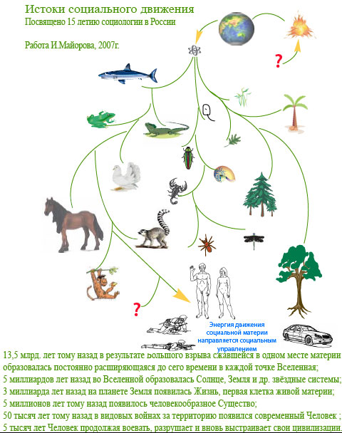
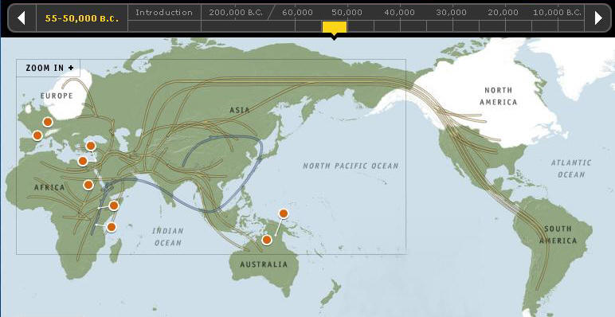
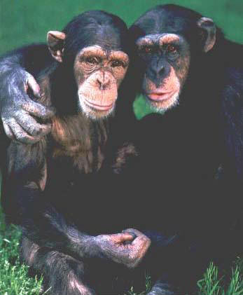

 Национальная идеяСущность национальной идеи отражена в определении нации. Нация - это исторически сложившаяся на определённой территории в государство общность людей с развитой экономикой и выражающая свои ценности на родном языке. (Авторское определение) Для России сущность национальной идеи заключается в том, что гражданин России в процессе своего образования и деятельности обязуется усвоить ценности человека: здоровье, работа, семья, любовь , дом, богатство (деньги), свобода, нравственность (этика), образование, безопасность и постоянно наращивать следующие навыки и умения: - беречь общность русского народа, братскую солидарность всех народов и народностей России, не допускать любых преград и заборов между гражданами и любым другим человеком, не гражданином России; - понимать, защищать и развивать свои ценности, конституированные в правах и свободах гражданина России, закреплённые в Конституции; - р азвивать общенациональные функции русского языка, дорожить каждой буквой национального алфавита и другими национальными символами. Например, можно бы молодым людям с обострённым национальным настроением использовать в качестве символа букву щ. Назвать своё объединение щ - движением. Эта буква есть в многих дорогих русскому духу словах - учащийся, трудящийся...; наконец, в слове ЕЩЁ; - защищать и обустраивать свой дом и национальную территорию России, разумно выбирать своих представителей в органы управления; - развивать инициативу гражданина и национальную экономику России; - соблюдать и развивать культурно-исторический календарь России, гордиться знанием истории семьи, местного поселения, края, области, республики и истории России; - понимать, что люди это одна семья в прямом и переносном смысле. Тем более, что Солнце, как источник жизни на Земле, уже отработало 2/3 своего жизненного цикла. В ходе эволюции люди произошли от одних африканских предков и их различия обусловлены культурной и природно-климатической автономией на протяжении миллиардов лет развития жизни и тысячелетий развития Человечества. Я согласен с Александром Солженициным: "Когда дискуссия о "национальной идее" довольно поспешно возникла в послекоммунистической России, я пытался охладить её возражением, что, после всех пережитых нами изнурительных потерь, нам на долгое время достаточно задачи Сбережения гибнущего народа."
 Это справедливо для всех развитых государств современности: США, Франции, Англии, Японии и т.д.Естественная борьба народов за появление новых наций, за возврат к историческим корням или за объединение народов на новых культурных, религиозных или иных нравственных основах требует осмысления и осторожного признания или осторожного влияния на нравы этих народов. Ошибки или прозрения целых народов и их лидеров весьма вероятны. Б.Майоров 1.09.2000
7.04.2006 по радио передали, что в Санкт-Петербурге убили студента из Африки. Я в это время читал последнюю книгу А.А.Зиновьева Трагедия России и не мог удержаться от реплики по поводу ситуации в стране и его взглядов. Зашёл в интернет на форум и другие места с изложением и образным определением философии как "словоблудия по поводу неспособности решить банальные проблемы". Отдельному человеку мало удаётся сделать конкретных вещей, а философу и того меньше. А.А.Зиновьев не исключение, так как и в его произведениях философские словоблудия зачастую не смогли вылиться в решения банальных проблем. Я не философ и смогу лишь кратко изложить своё мнение на особенности нашей эпохи, человека и социума. Сегодня, в результате научно-технической революции второй половины ХХ века человечество вновь переосмысливает себя и в этом контексте очерчиваются контуры ГЛОБАЛИЗАЦИИ - нового социума Земли в качестве платформы для эпохи РАЗУМА, где основой жизни станет индивидуальный РАЗУМ ЛИЧНОСТИ, а не частный капитал, заборы, религия и прочие национальные границы и ограничения.  ГЛОБАЛИЗАЦИЯ - это имя социальной траектории ЧЕЛОВЕЧЕСТВА и основной её движущей силой на данном историческом отрезке времени стало США. Но эпоха РАЗУМА позволит раскрыть свои разумные возможности всем людям Земли и очень возможно жить они будут не только в США. Даже в случае гипотетического саморазвала США эстафету подхватит самоорганизованный ГЛОБАЛЬНЫЙ центр силы с тем же вектором, с той же программой движения. Интуитивно об этом говорит и Зиновьев в своих произведениях. СССР по существу шёл в направлении ГЛОБАЛИЗАЦИИ мира, но своим неэффективным советским способом, о котором он, мальчик из деревни, ставший профессором, жалеет. И я его очень хорошо понимаю, так как и сам продолжатель своего отца - энтузиаста из деревни, ученик профессоров фронтовиков. Но то, что инициатива перехвачена США стоит ли жалеть, может помочь ЛИДЕРУ? Уверенная позиция нашего Президента, Правительства и Думы на стороне Восьмёрки и США в том числе могла бы помочь и нашей молодёжи направить свои силы по вектору ГЛОБАЛИЗАЦИИ и накоплению индивидуального РАЗУМА. Публичные колебания наших лидеров в этот сложный переходный период для России не способствуют передачи молодым людям культурных традиций ЧЕЛОВЕЧЕСТВА, которые собственным разумом и силой пытаются решать проблемы мирового порядка. Я за ГЛОБАЛИЗАЦИЮ и может моя личная позиция остановит наших молодых людей от неосторожных действий самостоятельного решения проблем миропорядка. --------------------- В начале 2025 года задал вопрос в чате искусственного интеллекта и получил, на мой взгляд, интересны ответ: Каковы перспективы политики как способа и метода управления обществом? ChatGPT сказал: Перспективы политики как способа и метода управления обществом зависят от множества факторов, включая глобальные изменения, социальные трансформации, технологический прогресс и изменения в общественном сознании. Рассмотрим основные направления: 1. Укрепление демократии и инклюзивности
2. Адаптация к глобальным вызовам
3. Технологизация политики
4. Политическая этика и социальная справедливость
5. Децентрализация и локальное управление
6. Культурные и идеологические изменения
7. Участие граждан
Заключение Политика остаётся важнейшим инструментом управления обществом, но её успешность в будущем будет зависеть от способности адаптироваться к изменяющимся условиям, сохранять баланс интересов различных групп и внедрять инновации. Ключевыми факторами являются этика, открытость и устойчивость.
24.02.2025 задал вопрос ИИ -
Каковы перспективы строительства национального государства в России? 1. Многонациональный состав населения 2. Конституционные и исторические принципы 3. Политическая устойчивость и территориальная целостность 4. Политические реалии и роль элит 5. Геополитические вызовы Альтернативный путь: Гражданская нация Вывод |